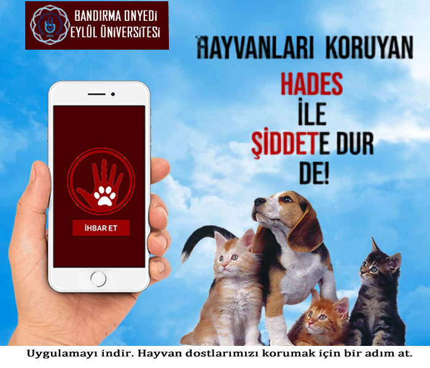

HAYVAN HAKLARI EVRENSEL BEYANNAMESİ
MADDE 1. —
Bütün hayvanlar biyolojik denge kavramı içerisinde varolmak bakımından eşit haklara sahiptir.
MADDE 2. —
Bütün hayvanlar saygı gösterilme hakkına sahiptir
.MADDE 3. —1. Hayvanlara kötü muamele edilemez veya zalimane davranışlarda bulunulamaz.
2. Eğer bir hayvanın öldürülmesi gerekiyorsa, bu bir anda, acısız ve korku yaratmaksızın yapılmalıdır3. Ölü bir hayvana saygıyla davranılmalıdır.
MADDE 4. —1. Vahşi hayvanlar yaşama hakkına ve kendi doğal çevrelerinde özgürce üreme hakkına sahiptirler.
2. Vahşi hayvanların özgürlüğünden uzun süreli alı konulması, avlanma ve balık tutma geçmiş zamana ait olup hangi sebeple olursa olsun vahşi hayvanların bu şekilde kullanımı hayati olmayıp, akis davranışlar bu temel hakka karşıdır.MADDE 5. —
1. Bir insanın desteğine ihtiyaç duyan her hayvan uygun beslenme ve bakımı görme hakkına sahiptir.2. Hiçbir koşul atında terkedilemez veya adil olmayan bir şekilde öldürülemezler.
3. Her tür soy üretme ve hayvan kullanımında soyun fizyolojisine ve kendi türüne özel davranışlarına saygı gösterilmesi zorunludur. 4. Hayvanları içeren sergiler, gösteriler ve filmler hayvanların onuruna saygı göstermek zorunda olup hiçbir şekilde şiddet içeremezler.
MADDE 6. —1. Hayvanlar üzerine yapılan fiziksel ya da psikolojik acı çekmeye sebep olan deneyler hayvanların haklarının ihlalidir.
2. Soyu tükenen hayvanların ya da yok edilen bir hayvanın yerine yenisinin ikame edilmesi yöntemleri geliştirilmeli ve sistemli olarak devam ettirilmelidir.MADDE 7. —
Gereği olmayacak şekilde bir hayvanın öldürülmesini içeren her kanun ya da buna yol açan her karar yaşama karşı işlenmiş suç kapsamındadır.MADDE 8. —
1. Vahşi bir hayvan soyunun hayata kalma onurunu hiçe sayan her yasa ve böylesi bir harekete sebep olan her karar soykırıma eşdeğer olup soya kaşı işlenmiş suçtur.
2. Vahşi hayvanların katledilmesi ve üreme yumurtalarının kirletilmesi, yok edilmesi soykırım cürümüdür.
MADDE 9. —
1. Hayvanların kendilerine özgü yasal statüleri ve hakları hukuk tarafından tanınmak zorundadır.
2. Hayvanların güvenliğinin koruma altına alınması hususu Devlet örgütleri düzeyinde temsil edilmelidir
.MADDE 10. —
Eğitimden ve okullaşmadan sorumlu merciler, vatandaşlarına çocukluktan itibaren hayvanları anlamayı ve saygı göstermeyi öğrenmeleri için olanak sağlamak zorundadır.
